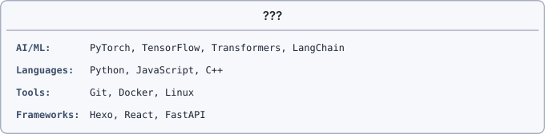

本页目录
Hello!
我是 fooSynaptic，一名专注于人工智能和自然语言处理领域的研究者和开发者。
研究方向
| 领域 | 方向 |
|---|---|
| 自然语言处理 | 机器阅读理解、问答系统、文本生成 |
| 大语言模型 | LLM Agent、RAG、Prompt Engineering |
| 深度学习 | Transformer、注意力机制、序列模型 |
| 知识图谱 | 知识抽取、实体识别、关系抽取 |
技术栈

博客内容
这个博客主要记录我在 AI 领域的学习和研究：
- 论文解读：LLM Agent、机器阅读理解等领域的核心论文
- 读书笔记：技术书籍的阅读总结
- 技术实践：从零实现各种算法和模型
- 思考感悟：对技术趋势和行业发展的思考
联系方式
如果你对我的研究感兴趣，或者有任何问题想要交流，欢迎通过以下方式联系我：
| 方式 | 联系 |
|---|---|
| 2313990450@qq.com | |
| GitHub | github.com/fooSynaptic |
座右铭
Truth through synaptic thinking.
以突触般的智能连接，探索真理。
感谢你的访问！期待与你的交流。